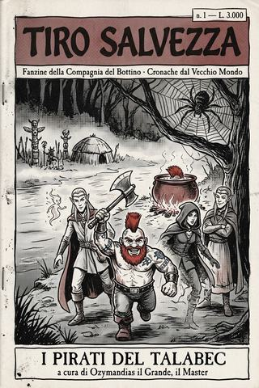

Tiro Salvezza · numero I
I pirati del Talabec
Numero uno della fanzine della Compagnia del Bottino: le prime due cerche del gruppo per il conte Darian I di Talabecland — pirati goblin sul fiume e sangue di troll — raccolte e commentate dal loro Master.
- ≈ 27 min di lettura
- Ozymandias il Grande
- dalle partite a D&D 5ª ed.
- anche in EPUB, 2,8 MB
Editoriale — numero uno
TIRO SALVEZZA — fanzine della Compagnia del Bottino · rubrica «Cronache dal Vecchio Mondo»
Benvenuti al primo numero, e mettetevi comodi, perché non capita spesso di assistere alla nascita di una leggenda dal basso — molto dal basso.
Mi presento, per chi non frequenta il tavolo: sono il Master, quello che sta dietro lo schermo di cartone, prepara i mostri, tira i dadi al riparo da occhi indiscreti e la sera trascrive cos’hanno combinato i suoi giocatori. Firmo Ozymandias il Grande, per ragioni che chi conosce la poesia ha già intuito e chi non la conosce scoprirà con gli anni. Questa fanzine nasce per un motivo solo: che le imprese di questa gente meritano di essere messe per iscritto prima che qualcuno le dimentichi, o peggio, prima che qualcuno cominci a raccontarle come se fossero andate secondo un piano.
Non sono andate secondo un piano. Non ce n’era uno. È questo il bello.
In questo numero d’apertura trovate le due cerche con cui tutto è cominciato — i pirati goblin sul Talabec e il sangue di troll per il rito del piromante di corte — unite in un’unica cronaca perché, prese da sole, sarebbero due racconti troppo brevi per un gruppo che di breve non ha mai avuto niente, tantomeno le riunioni. Ci troverete un fiume, una taglia, un nano che avrebbe dovuto ascoltare i compagni, e il primo nome di un registro che, ahimè, si è poi allungato parecchio.
Le note a piè di pagina sono roba mia: chiamatele la rubrica del Master. Servono a spiegarvi il mondo, a smascherare qualche mia regia, e a ricordarvi che dietro ogni mostro e ogni coincidenza, a un tavolo di Faenza, c’era un ragazzino che aveva appena deciso di fare la cosa più sbagliata possibile. Le ho amate tutte, quelle decisioni. Anche quella del paiolo.
Buona lettura. E occhio ai nani sventratori: non è mai una buona idea affezionarcisi.
— Ozymandias il Grande, il Master
Sommario
- I pirati del Talabec (1ª e 2ª cerca) — Il conte Darian I ha un problema di pirati, un amico nano con l’emicrania da oro sottratto, e un rito da preparare. La Compagnia del Bottino ha un mantello dell’invisibilità, uno scoiattolo tattico, e nessun piano. Cosa potrà mai andare storto?
Linea temporale
Dove siamo nella campagna della Compagnia del Bottino. In grassetto ciò che leggerete in questo numero.
- 1ª cerca — I pirati del Talabec — il fiume, i goblin, il paiolo. (muore: Cyccios Spezzatronchi.)
- 2ª cerca — Il sangue del troll — la palude, il troll, il rito da preparare. (entra: Katnys.)
- 3ª cerca — La cerca del talismano — Sylvania, la contrada dei conti vampiro. (prossimamente.)
Filo lasciato aperto: il conte vuole anche un antico talismano perduto in Sylvania. La Compagnia ci andrà. Se lo sapesse, ci penserebbe due volte — e siccome è la Compagnia del Bottino, non ci penserà affatto.
I pirati del Talabec
Resoconto delle prime due cerche della Compagnia del Bottino, per il conte Darian I di Talabecland — a cura di Ozymandias il Grande, il Master.
Impero, contea di Talabecland. Prima che qualcuno imparasse alcunché.
Prologo — Una parola sul Bottino
Prima di raccontarvi come è cominciata, lasciate che vi risparmi la fatica di sperare in qualcosa che non arriverà. Non arriverà un piano. Non arriverà, in queste pagine, il momento in cui i nostri eroi si guardano negli occhi, si dividono i compiti con giudizio, e portano a termine un’impresa nel modo in cui l’avevano previsto. Ho diretto queste sedute con la mano sul cuore e i dadi al riparo dello schermo, e posso giurarvi che quel momento non è mai venuto — non allora, non dopo, non una sola volta in tutta la campagna.1
Quello che arriverà, invece, è il Bottino. Perché se c’è una cosa che questa gente venera con una fede che nessun sacerdote di Sigmar oserebbe pretendere dai propri fedeli, è il mucchietto di monete in fondo alla stanza. Metteteli davanti a una porta con inciso sopra «se la apri, muori», e non discuteranno se aprirla: discuteranno come, per venti minuti, litigando su chi la apre e chi si mette al riparo, e poi la aprirà comunque quello che non stava ascoltando. Metteteli davanti a un dio sepolto e a un forziere, e vi assicuro che è il forziere a togliere loro il sonno.
Sono avidi, litigiosi, incapaci di stare zitti quando servirebbe e di parlare quando servirebbe davvero, e falliscono ogni piano che concepiscono con una costanza che, se solo l’avessero applicata a qualcosa di utile, ne avrebbe fatto degli eroi veri. Invece ne ha fatto la Compagnia del Bottino, e ne ha fatto — questo devo ammetterlo — lo spettacolo più bello che mi sia mai capitato di arbitrare.
Il mio mestiere, in tutto questo, è duplice, e conviene che ve lo dica subito perché non vi aspettiate un romanzo. Da una parte tengo la penna: raccolgo ciò che è successo al tavolo e lo ricopio con qualche bugia aggiunta per amore del ritmo, ché la verità nuda, in narrativa, è quasi sempre mal vestita. Dall’altra tengo i registri: quello del bottino, che loro consultano di continuo, e quello dei morti, che consulto soltanto io. Sono i due libri mastri di questa compagnia, e vi accorgerete presto che crescono insieme, l’uno a spese dell’altro, con una simmetria che ho smesso da tempo di trovare consolante.
Vi presento la razza di gente. Il mondo — quello serissimo del Vecchio Impero, stretto tra la foresta e la dannazione, dove gli uomini pregano un dio col martello e i morti non stanno mai del tutto giù — ve lo presenterete da soli, strada facendo. Comincio dove è cominciato: da un fiume, da una taglia, e da un nano che avrebbe dovuto ascoltare i compagni. Nessuno di loro lo fa mai. Ma lui fu il primo, e per questo, in mezzo a tutte le risate, gli devo almeno la cortesia di contarlo.
Capitolo primo — La cerca del conte
Ogni leggenda che si rispetti comincia con qualcuno che ha un problema e i soldi per delegarlo, e il nostro qualcuno era Darian I, conte elettore di Talabecland — uomo che, prima di conquistarsi un titolo e la comoda abitudine di far fare agli altri, era stato a sua volta un avventuriero, e dunque sapeva perfettamente a chi si stava rivolgendo. Indisse una cerca. Le cerche funzionano così: si sparge la voce che c’è oro per chi risolve una seccatura, e da ogni taverna della contea si mette in moto quella particolare categoria di persone che considera «avere un lavoro onesto» un fallimento morale.
La seccatura, in questo caso, era finanziata da un amico del conte: Alrik Kiomarossa, nano ricco fino all’indecenza, le cui chiatte cariche di minerali risalivano e discendevano il Talabec protette da costosi sigilli magici antifurto, e venivano ciononostante depredate con una regolarità che gli stava procurando più emicranie che perdite — e per un nano, sappiatelo, l’emicrania da denaro sottratto è un dolore che nessun cerusico sa curare.2 Qualcuno assaltava le chiatte, ne spezzava i sigilli, e spariva col carico. Bisognava scoprire chi, stroncarlo, e — clausola che i nostri lessero prima di tutto il resto, con quella prontezza che riservano soltanto ai paragrafi sul compenso — recuperare il maltolto.
Vi confesso che, quando esposi loro l’incarico, di tutto il discorso del conte — i pirati, le chiatte, la sicurezza della contea, l’onore, eccetera — a rimanere impigliata nelle loro orecchie fu una parola sola: «recuperare». La sentii cadere nella conversazione come una moneta in un pozzo, e vidi otto paia di occhi seguirla giù. Da lì in poi non fu più una cerca contro i pirati: fu una spedizione di recupero di roba altrui, con l’incoraggiante particolare che chi ce l’aveva rubata sarebbe stato lieto di restituirla appena morto. Sono sfumature. Ma è nelle sfumature che si riconosce la razza di gente.
A raccogliere la cerca fu un gruppo che definire «eterogeneo» è un atto di gentilezza. C’era Ridley, ladra umana, sensata quel tanto che basta a sopravvivere e non un grammo di più, munita di un mantello che la rendeva invisibile e di una filosofia altrettanto sfuggente. C’era Cyccios Spezzatronchi, nano sventratore, di quella confraternita di nani che hanno giurato di cercarsi una morte gloriosa in battaglia e nel frattempo la cercano con un’insistenza che imbarazza chiunque preferisca sopravvivere. E c’era un contingente di alti elfi di Ulthuan, al seguito del loro ambasciatore, ospiti del conte — perché anche Darian, ai suoi tempi, aveva vagabondato con gente strana, e certe amicizie restano.
Il matrimonio fra un nano sventratore e un drappello di alti elfi merita una parola, perché è la stessa parola che meriterà per tutta la campagna: disastro. Nani ed elfi si detestano da prima che l’Impero esistesse, da una guerra così antica che nessuno dei due popoli ricorda più chi cominciò e nessuno dei due ammetterebbe che fu lui. Metteteli nello stesso gruppo e otterrete due alleati che combatteranno il nemico comune con la metà delle forze, tenendo l’altra metà pronta per l’occasione in cui potranno finalmente dire all’altro «te l’avevo detto». Aggiungeteci un paio di umani, che degli uni e degli altri pensano tutto il male possibile e lo pensano ad alta voce, e avrete la Compagnia del Bottino: un capolavoro di antipatie incrociate tenuto insieme, come tutte le cose migliori, dall’avidità.
Fra gli elfi vale la pena presentarne due, ché li ritroverete. Fieraman, stregone, che si accompagnava a un folletto di luce da lui battezzato, in elfico, «Pikachu» — nome che l’elfico rende con una solennità che non merita, e che vi prego di pronunciare mentalmente con tutta la gravità di cui siete capaci. E Endia, druida del Circolo di Giada, capace di trasformarsi in qualunque bestia le passasse per la mente, ivi comprese quelle che in battaglia non servono assolutamente a niente. Sugli altri elfi soprassiedo, perché soprassiedono anche loro: viaggiavano con l’aria di chi fa un favore all’universo standogli accanto, atteggiamento che i più giovani della compagnia avrebbero presto ribattezzato, con affetto e nessun rispetto, «fare il rekkiapunta».3
Perfettamente equipaggiati e insopportabilmente fiduciosi, risalirono il corso del Talabec a cavallo, verso il punto dell’ultimo assalto. Nessuno di loro, in quel momento, aveva la più pallida idea di cosa stesse facendo. È un dettaglio che, vi avverto, non cambierà nel corso di questa storia. Anzi.
Capitolo secondo — Il fiume
Trovarono la chiatta dove le acque si allargano e rallentano: arenata, sfondata, arresa. Nella stiva, incredibilmente, una delle preziose casse di Alrik era ancora intatta, col sigillo magico integro a fare la guardia a un carico che nessuno aveva più portato via — mentre di altre due casse non restavano che assi spezzate e l’inconfondibile fuliggine di un’esplosione arcana. Chi aveva colpito sapeva come si spezza un sigillo antifurto, il che restringeva la lista dei sospetti a chiunque abbia mai avuto a che fare con la magia e nessuna morale.
Su quel dettaglio, per la cronaca, si accese la prima delle innumerevoli discussioni della compagnia, e vale la pena registrarla perché è il prototipo di tutte le altre. Il ranger elfo osservò, giustamente, che dei goblin non sanno spezzare un sigillo magico più di quanto sappiano recitare poesia. Ridley osservò, altrettanto giustamente, che se non erano stati i goblin allora c’era qualcun altro, e che quel qualcun altro era un problema più grosso della taglia. Cyccios osservò che stavano perdendo tempo. Gli altri osservarono, a turno, che gli osservatori precedenti avevano torto. E siccome nessuno aveva una risposta e tutti avevano un’opinione, la conclusione operativa fu quella a cui questa gente approda sempre: rimandare il ragionamento e proseguire, fiduciosi che il problema, se ignorato con sufficiente convinzione, si sarebbe risolto da solo.4
Le tracce, dal canto loro, parlavano chiaro — o quanto chiaro può parlare il fango: piedi di goblin, molti, e segni che nemmeno l’occhio del ranger, abituato a leggere le foreste come gli scribi leggono i registri, riuscì a decifrare del tutto. Si prepararono al campo, decisi a seguire la pista col mattino. Fu una decisione ragionevole, e perciò destinata a non contare nulla, perché il mattino non venne per tutti.
Venne, nella notte, il branco. Lupi giganti, grossi come pony e di umore assai peggiore, richiamati da chissà cosa — l’odore dei cavalli, l’odore della paura, o semplicemente quella sfortuna che nel Vecchio Mondo tiene il posto della fortuna. La compagnia li affrontò con coraggio e con quella dose di imprudenza che, in dosi minori, si chiama incoscienza e, nelle dosi che maneggiavano loro, si chiama Cyccios.
Perché quando i lupi superstiti ruppero e fuggirono nella foschia, il nano sventratore fece l’unica cosa che un nano sventratore, per giuramento, sente di dover fare: si lanciò all’inseguimento. Da solo. Nel buio. Mentre i compagni gli gridavano di non farlo.5
Lo gridarono, per la cronaca, con convinzione. Ridley lo gridò. Endia lo gridò. Persino gli elfi, che di norma non alzano la voce per non sciupare l’eleganza, lo gridarono. Non servì a niente, e non poteva servire, perché a un uomo che cerca la morte non si offre un buon consiglio: gli si offre, senza saperlo, esattamente ciò che vuole. L’iroso Cyccios scomparve nella foschia della notte, e con lui — anche se ancora non lo sapevano — cominciò il primo, lungo, allegro e funesto capitolo del registro che avrei tenuto per tutta la campagna: quello dei nani che non tornano.
Diversi minuti di discussione dopo — perché anche di fronte a un compagno inghiottito dal buio, questa gente trova sempre il tempo per una riunione — decisero di seguirlo. Muovendosi furtivi, o quanto di furtivo consente un gruppo che comprende degli elfi convinti della propria superiorità e almeno una persona che inciampa, udirono in lontananza rumori di lotta. Poi il vento cambiò, e portò un odore. E l’odore, purtroppo, portò a un accampamento.
Capitolo terzo — Il paiolo
Era un accampamento di goblin delle foreste: sudicio, puzzolente, e sormontato da una capanna a cupola coperta di totem da sciamano, da cui emanava l’aura grezza e inconfondibile della magia pelleverde — la temuta, selvaggia waaagh, che non si studia sui libri perché i pelleverde non hanno libri, ma solo un entusiasmo collettivo così intenso da piegare la realtà.6 In alto tra gli alberi pendeva una ragnatela mostruosa, e al suo centro un ragno delle foreste grosso come un carro, cavalcatura probabile dello sciamano o del capo goblin, che intanto impartiva ordini ai suoi piumati sottoposti, affaccendati attorno a un grosso paiolo di rame.
Da quel paiolo, mentre i nostri osservavano acquattati, spuntava una cresta rossastra ben nota.
Era Cyccios. Cotto. Pronto. Mancava, si sarebbe detto, soltanto la salsa piccante.
Vi concedo un istante per la commozione, perché ne ha diritto, e perché è l’unico che vi chiederò per un pezzo. Poi devo raccontarvi la verità, che è meno solenne: la compagnia lanciò un incantesimo di nebbia per coprirsi e strisciare all’attacco, il che fu tatticamente brillante per esattamente il tempo necessario a rendersene conto del contrario. La nebbia copriva loro come copriva i goblin, e siccome questa gente ha, nel migliore dei casi, una capacità di coordinarsi paragonabile a quella di un sacco di gatti, si ritrovarono in un batter d’occhio separati, ciechi, e a combattere ciascuno per la propria vita in una zuppa bianca da cui uscivano solo urla e bestemmie.
Fu una scena che, dovendo arbitrarla, imparai a memoria per gli anni a venire, perché è il ritratto della compagnia in miniatura: ognuno persuaso di stare eseguendo il piano, ognuno che eseguiva il proprio, e il piano collettivo evaporato con la stessa nebbia che avrebbe dovuto servirlo. Qualcuno colpì un’ombra e si scoprì di aver mancato un goblin; qualcun altro colpì un’ombra e si scoprì di aver centrato un compagno; almeno uno passò l’intero scontro a cercare gli altri, chiamandoli a bassa voce per non farsi sentire dai nemici che nel frattempo lo sentivano benissimo. In compenso i goblin, che nella nebbia ci vivono e non pretendono di coordinarsi con nessuno, si trovarono improvvisamente avvantaggiati da un’oscurità che i nostri si erano procurati da soli. È un genere di autolesionismo tattico che ho visto ripetere in forme sempre nuove, e che ho smesso di correggere il giorno in cui ho capito che era, in fondo, il loro stile.
Fu, ironia delle ironie, il ragno a mettere ordine. Affamato e superiore a queste beghe, il colosso si calò d’improvviso, ghermì uno dei suoi stessi lupi da guerra, e si ritirò con calma sulle fronde a succhiarne le carni — da aracnide beneducato, che non mangia mai in mezzo agli ospiti.7 La distrazione bastò. A prezzo di parecchi lividi e di ogni residua dignità, i nostri sconfissero i goblin fino all’ultimo, e allo sciamano fu tolta di netto qualsiasi ulteriore ambizione teologica; la sua waaagh, senza più una folla che la alimentasse, si spense come si spegne una candela quando si porta via la stanza.
Poi, con la delicatezza che li contraddistingue, tagliarono le orecchie dei nemici — perché è così che si prova un’uccisione e si riscuote la taglia — le infilarono in un sacco, e passarono al vero scopo della serata, che come sempre non era la vittoria ma il suo sottoprodotto: il bottino. Recuperarono parte del carico di Alrik, rovistarono l’accampamento con l’entusiasmo di chi non ha ancora imparato la differenza tra un tesoro e l’immondizia di un goblin, e infine fecero ritorno a Talabheim. Di Cyccios recuperarono ciò che si poteva recuperare, che era soprattutto la sua ascia e l’imbarazzo. Un nano sventratore aveva trovato la sua morte gloriosa. Che l’avesse trovata in un paiolo di rame, e non sul campo, è un dettaglio su cui la sua confraternita ha sempre preferito sorvolare, e su cui sorvolerò anch’io — ma solo dopo averlo scritto, perché il mio mestiere di cronista prevede che io rida di tutto tranne che del conto, e il conto, quella sera, segnava uno.
Capitolo quarto — La seconda cerca
Il notevole risultato ottenuto contro i pirati — perché tale, agli occhi di chi non c’era, era stato: una banda di predoni goblin stroncata, il carico recuperato, la contea più tranquilla — valse ai nostri l’onore di essere ricevuti dal conte in persona. Darian li accolse come si accolgono gli eroi utili, con un banchetto, e con quella particolare cordialità dei signori che stanno per chiedervi qualcos’altro.
Il banchetto, va detto, fu un’impresa a sé, e di quelle in cui la compagnia diede il meglio di sé nel senso peggiore. Messi per la prima volta davanti a posate d’argento e a un vino che non veniva servito in boccali, i nostri si divisero con naturalezza nelle fazioni che li avrebbero accompagnati per sempre: gli elfi a giudicare l’apparecchiatura, gli umani a giudicare gli elfi, e quel che restava dei nani a bere con una determinazione che a corte scambiarono, generosamente, per sete rituale. Ridley studiò l’argenteria con un interesse professionale che sconsigliai vivamente di approfondire. Darian, che di avventurieri se ne intendeva, finse di non accorgersi di nulla, il che è la sola forma di cortesia che funzioni con questa gente.
Poi venne la richiesta, e fu una cerca importante, e a due gambe. Il mago di corte — un piromante di riguardo, uscito dal collegio imperiale della magia delle fiamme — doveva officiare un rito, e per il rito servivano due cose difficili: sangue fresco di troll di fiume, e un antico talismano perduto nella contea di Sylvania, a oriente. Del sangue di troll ci occuperemo tra poco. Del talismano di Sylvania, per ora, vi dico solo questo: che la parola «Sylvania», nel Vecchio Mondo, la si pronuncia come si pronuncia il nome di una malattia in casa di un malato, a bassa voce e sperando che non ti senta. La pronunciò anche Darian a bassa voce, e non per delicatezza. Ma di quella landa, e di ciò che i nostri vi trovarono, dirò a suo tempo, perché è una storia che merita da sola tutte le sue pagine, e questa non è quella.8
I nostri, prevedibilmente, dei due incarichi ne udirono soprattutto uno. Il sangue di troll era vicino, sbrigativo, e sulla strada di casa; il talismano di Sylvania era lontano, maledetto, e sulla strada di nessuna parte. Decisero pertanto, con quel raro slancio di saggezza che precede sempre le loro peggiori disavventure, di cominciare dal troll e di occuparsi di Sylvania «più avanti». Il «più avanti», vi assicuro, arrivò. Ma questo lo sanno loro adesso, non lo sapevano allora, e non c’è gusto a rovinare l’attesa.
Equipaggiati dall’armeria magica del conte, puntarono a sud, verso i fiumi paludosi dove abitano i rari e puzzolenti troll di fiume, celebri per il fetore quanto per la pericolosità. E qui, perché la Compagnia del Bottino non resti mai a lungo senza un nano — la natura, si sa, aborre il vuoto, e ancor più aborre un gruppo di avventurieri privo di qualcuno che carichi senza pensarci —, entrò in scena Katnys, guerriera nanica, arrivata a colmare il posto che il paiolo aveva lasciato vacante. Prese servizio con l’entusiasmo di chi non ha ancora sentito la storia di Cyccios, o l’ha sentita e non ne ha tratto la benché minima lezione. Ho imparato, con gli anni, a non distinguere più tra le due cose.
Fieraman, da bravo stregone previdente, acquistò per la spedizione un mastino da caccia ben addestrato, che li guidasse e li avvisasse dei pericoli. Fu, per una volta, una decisione tanto assennata da risultare sospetta, e ricordo di essermi domandato, da dietro lo schermo, che cosa avesse in mente. Non aveva niente in mente: gli era semplicemente sembrato il genere di cosa che fa un avventuriero previdente, e per una volta aveva avuto ragione. Capita. Non spesso, ma capita. Poi risalirono il fiume che passa per il paese, e sopra una collina udirono, soffocati dal fragore dell’acqua, certi rumori che non promettevano nulla di digeribile.
Capitolo quinto — Il sangue del troll
Ridley ed Endia andarono in avanscoperta e identificarono la preda: un troll di fiume alto più di quattro metri, intento a masticare canne con quella lentezza elaborata che nelle sue vene tiene il posto del pensiero. I troll sono creature semplici. Sono anche, e questo è il problema, creature che guariscono. Tagliate loro un braccio e ve lo ricrescono mentre ancora vi complimentate; l’unico modo di convincere un troll che è ferito è ferirlo con qualcosa che non sappia rigenerare, e nel Vecchio Mondo quel qualcosa ha due nomi soltanto: fuoco e acido.9
Il che avrebbe suggerito, a menti coordinate, un piano semplice: gli elfi maghi tengono aperte le ferite col fuoco e con l’acido, i corpo-a-corpo tengono occupato il mostro, la ladra fa la ladra. Menti coordinate, però, ve l’ho detto, non ne avevamo. Perciò Katnys, da brava nana, si lanciò all’assalto senza curarsi di strategie — perché il posto di Cyccios non è un posto vacante, è una vocazione, e chi lo occupa ne eredita anche l’impazienza. Endia, dal canto suo, si trasformò in scoiattolo. Uno scoiattolo. Contro un troll di quattro metri. Sostiene, ancora oggi, che avesse in mente di arrampicarglisi in groppa; io ho arbitrato la scena e vi assicuro che non aveva in mente assolutamente nulla, come del resto capita al meglio dei druidi nei momenti che contano.10
Mentre lo scoiattolo meditava sul senso della propria esistenza e la nana duellava, impari, ascia contro tronco d’albero ambulante, le cose serie le fecero i soliti. Ridley sparì sotto il mantello dell’invisibilità e si avvicinò al fianco della bestia con la pazienza che questa gente sa avere solo quando in ballo c’è la propria pelle. Fieraman colpì a distanza con fuoco e acido, le uniche cose che impedissero al troll di richiudersi le ferite alla sua velocità prodigiosa; ogni volta che la carne del mostro tentava di rammendarsi, una vampata o uno sputo corrosivo la teneva aperta, e il troll ruggiva quel ruggito confuso e offeso delle creature che non capiscono perché stavolta la guarigione non arrivi.
Fu in quel varco di rabbia e di dolore che Ridley, dal nulla in cui si era acquattata, calò un preciso colpo di sciabola e aprì un’arteria nella coscia del mostro. Da quella ferita — mentre il troll si dibatteva e gli elfi tenevano la fiamma addosso perché non si rimarginasse — Fieraman raccolse il sangue corrosivo in una speciale bottiglia di peltro e argento, l’unico contenitore che quel liquido non avrebbe sciolto in un istante. Riempirla richiese sangue freddo in senso quasi letterale, perché bisognava avvicinare le mani a quattro metri di fame ferita e tenerle ferme il tempo di un travaso; e fu, credo, l’unico momento dell’intera giornata in cui la compagnia lavorò davvero insieme, ciascuno al proprio posto, ciascuno in silenzio. Durò pochi secondi. Ma li ho annotati, perché sono rari, e perché un cronista onesto deve registrare anche le eccezioni, altrimenti si finisce per credere che una compagnia sia soltanto i suoi difetti — e non è vero, o non è vero del tutto, o almeno non lo è sempre.
La cerca era compiuta. Restava soltanto il particolare, non trascurabile, di non finire divorati. Se ne occupò, ancora una volta, Ridley: tornò visibile giusto il tempo di attirarsi addosso l’attenzione del troll, lo condusse lontano dai compagni con una serie di insulti e di sassate, e poi svanì di nuovo nel nulla, lasciando quattro metri di fame confusa a cercare una preda che non c’era più. È il genere di piano che a questa gente riesce benissimo — improvvisato, sfacciato, e con un solo esecutore, perché più d’uno e si sarebbero messi a discutere. Il guaio è che non lo sanno, e continueranno per tutta la campagna a preferire le riunioni ai risultati.
Epilogo — Il conto
Fecero ritorno a nord con la bottiglia intatta, il sangue ancora caldo, e l’aria di chi ha fatto qualcosa di straordinario — che, a essere onesti, avevano fatto: due cerche, due successi, per un gruppo che al primo campo aveva già perso un uomo nel modo più indecoroso concepibile. Il conte fu soddisfatto. Il piromante ebbe il suo sangue di troll. Alrik Kiomarossa riebbe parte del suo minerale e archiviò l’emicrania, ripromettendosi — e teneteveli a mente, questi ripensamenti di nano ricco, perché tornano — di sdebitarsi un giorno con quella strana compagnia, e magari di servirsene ancora, per faccende più delicate del recupero di qualche cassa.
E io chiusi il primo resoconto contando ciò che c’era da contare. Nella colonna delle vittorie: due. Nella colonna del bottino: soddisfacente, e già litigato. Nella colonna che avrei imparato a temere più di tutte — quella dei nomi — uno solo, per ora: Cyccios Spezzatronchi, nano sventratore, morto gloriosamente in un paiolo di rame, primo di una fila di suoi confratelli che di lì in avanti si sarebbe allungata con una puntualità da far invidia alle poste imperiali.11
Restava, in fondo alla pagina, una parola che nessuno di loro aveva ancora imparato a temere abbastanza: Sylvania. Il talismano era ancora là, nella contrada dei morti che camminano, ad aspettare la Compagnia del Bottino con la pazienza delle cose che sanno di essere cercate. Ma quella, come vi ho detto, è un’altra storia, e a raccontarla adesso rovinerei il gusto di entrambe.
Per ora vi basti la morale, se di morale si può parlare a proposito di questa gente: che avevano vinto due volte, e non per merito d’un piano, ma perché al momento giusto qualcuno aveva smesso di litigare e aveva fatto la cosa più semplice. Non impareranno mai che è quello il segreto. Ed è un bene. Se lo imparassero, non avrei avuto niente da scrivere.
— Ozymandias il Grande, il Master
Da dove vengono queste storie
Queste non sono cronache ritrovate in una vecchia fanzine ingiallita, e «Ozymandias il Grande» — il Master che le firma — non le ha scritte davvero da solo. Sono nate dove nascono tutte le storie migliori: attorno a un tavolo.
I resoconti di questo volume vengono dai tavoli di gioco del Brainstorm Club, associazione di giochi di ruolo e da tavolo di Faenza (RA) — e, in particolare, dal tavolo dei più giovani. Dietro ogni canaglia di queste pagine — il druido che si trasforma nel momento sbagliato, il paladino che fa scattare ogni trappola, il bardo che suona quando dovrebbe tacere, il nano sventratore che carica da solo e non torna — c’è un ragazzo o una ragazza in carne e ossa, seduto a un tavolo vero, che una sera ha deciso cosa il suo personaggio avrebbe fatto. Il resto è soltanto trascrizione, con qualche bugia aggiunta per amore del ritmo.
Al Brainstorm Club si gioca da più di trent’anni, e non a un gioco solo: oltre a Dungeons & Dragons, ci si siede a Brancalonia, a Rogue Trader, ad Apocalypse World e a molti altri giochi di ruolo. Ma queste storie hanno una particolarità: nascono da una campagna condotta con i giocatori più giovani del club — bambini e ragazzi che, oltre a giocare, imparano a dirigere il gioco: a costruire mondi, a tirare i dadi dietro lo schermo, e a raccontare storie come queste.
Il club accoglie nuovi giocatori da tutta la Romagna, e tiene sessioni dedicate ai più giovani — bambini dai 9 ai 15 anni, ragazzi dai 16 ai 19. Se una di queste sedute vi ha strappato una risata (e magari un pizzico di dispiacere per l’ennesimo sventratore finito nel paiolo), ricordate che è cominciata con un tiro di dado e con qualcuno che, a un tavolo di Faenza, ha detto: «il mio personaggio, invece, fa così».
Brainstorm Club — Faenza (RA)
brainstormclub.it · info@brainstormclub.it
Note
«Piani B», nel gergo che questa compagnia mi ha costretto ad adottare, è una categoria puramente teorica: designa quella seconda linea d’azione che ci si prepara prima che la prima fallisca, e che presuppone dunque due condizioni — prevedere il fallimento, e prepararsi. La Compagnia del Bottino ha sempre eccelso nella prima e non ha mai tentato la seconda. Ne è nata la massima che ho ripetuto per anni ai loro danni: l’avventuriero medio fa i piani, ma non i piani B.↩︎
I nani e l’oro sono legati da un affetto che gli altri popoli, che con l’oro hanno rapporti volgarmente pratici, faticano a comprendere. Per un nano una moneta sottratta non è una perdita: è un torto. La differenza è la stessa che passa tra chi vi ruba il portafogli e chi vi ruba il nome. Alrik Kiomarossa non voleva indietro il suo minerale: voleva che qualcuno pagasse per averglielo toccato. Che pagasse in orecchie di goblin gli andava benissimo.↩︎
«Rekkiapunta» è termine di conio recente e ignota grafia, che i più giovani della compagnia hanno forgiato per designare l’alto elfo di Ulthuan nell’atto di ricordarti la propria superiorità — cosa che l’alto elfo fa di continuo, e col respiro. L’etimologia più accreditata lo fa derivare dalle orecchie a punta congiunte a un verbo che la buona educazione mi impedisce di trascrivere. È volgare, ingiusto e perfettamente calzante, e lo troverete d’ora in avanti a ogni pagina in cui compaia un elfo, il che nel Vecchio Mondo significa: quasi tutte.↩︎
Ho registrato questa dinamica così spesso da darle un nome tutto mio: il «rinvio operativo». Consiste nel sostituire alla soluzione di un problema la decisione di non pensarci adesso, nella fiducia — mai una volta ripagata — che il problema abbia la cortesia di risolversi da sé. Il sospetto che dietro i pirati goblin ci fosse una mano più abile andò archiviato così, in questo modo. Se avesse avuto un seguito, ve lo direi. Diciamo che certi rinvii, nel Vecchio Mondo, si fanno un interesse notevole prima di presentare il conto.↩︎
Gli Sventratori sono nani che, avendo conosciuto una vergogna o un dolore insopportabili, giurano di cercarsi la morte in battaglia contro il nemico più grande che riescano a trovare, e non si radono più che la cresta, tinta di rosso a memoria del voto. È un culto tragico e nobilissimo, e ne ho il massimo rispetto — rispetto che non mi impedisce di osservare che, in termini di aspettativa di vita al mio tavolo, arruolare uno Sventratore equivale a portarsi in casa una candela e stupirsi che scaldi. Cyccios fu il primo. Non fu, ahimè, l’ultimo, né quello che morì nel modo più assurdo. La concorrenza, su quel fronte, si è rivelata feroce.↩︎
La magia waaagh dei pelleverde non è una scuola arcana ma un fenomeno di folla: cresce col numero e con l’eccitazione, e uno sciamano goblin non la lancia tanto quanto la raccoglie, come si raccoglie l’acqua piovana con un secchio, sperando di non annegarci. È rozza, imprevedibile e sorprendentemente efficace, esattamente come i suoi utilizzatori. La differenza tra uno sciamano goblin e un mago del collegio imperiale è la stessa che passa tra un incendio e un fornello: entrambi cuociono, ma solo di uno ci si può fidare per la cena.↩︎
Attribuisco l’educazione del ragno a mia esclusiva regia, e ne vado fiero: i giocatori si erano incastrati nella loro stessa nebbia e la scena rischiava di impantanarsi, sicché calai il ragno a mangiarsi un lupo per rimettere in moto le cose. Che poi la creatura si sia ritirata a mangiare in disparte anziché addosso a qualcuno, be’, quello lo decisero i dadi — ma io mi sono preso il merito della buona creanza, come fa ogni Master che si rispetti con ogni coincidenza che gli torni comoda.↩︎
Sylvania è la contrada orientale dell’Impero che gli atlanti assegnano ad Averland e la realtà assegna ai morti. È terra di conti vampiro, di villaggi che sbarrano le finestre col crisantemo e l’aglio, di fiumi che i cadaveri non sanno attraversare. Il talismano che il piromante voleva era là. Ci andarono. Tornarono in meno di quanti erano partiti, con addosso una maledizione, un violino che non avrei mai dovuto lasciar toccare loro, e la conoscenza personale di un gentiluomo dai canini molto lunghi. Ma tutto questo, ripeto, a suo tempo.↩︎
La rigenerazione del troll è, dal punto di vista di chi deve ucciderlo, una scortesia biologica: la creatura richiude le ferite quasi alla velocità con cui gliele infliggi, sicché tagliarla è come scrivere sull’acqua. Fanno eccezione le ferite di fuoco e di acido, che il troll non sa rammendare — ragione per cui ogni manuale di caccia al troll, se i troll leggessero, si aprirebbe con l’avvertenza: portatevi un mago, e che sappia scaldare.↩︎
In difesa di Endia va detto che il druido del Circolo di Giada trae dalle forme selvatiche un potere considerevole; a suo carico va detto che la scelta della forma dovrebbe tener conto della circostanza, e che uno scoiattolo, di fronte a quattro metri di troll, di circostanze ne prevede una sola e sgradevole. Ho registrato negli anni una casistica ricca delle sue trasformazioni a sproposito, culminata assai più tardi in un barboncino che i compagni ricordano ancora con un misto di terrore e affetto. Ma non anticipiamo.↩︎
Tengo il registro dei morti con la stessa cura con cui Alrik tiene quello dell’oro, e per la stessa ragione: perché un nome che manca dal totale grida più forte di tutti quelli che ci sono. Di questa compagnia ho contato molti caduti, e la maggioranza schiacciante portava la barba e la cresta rossa. Rido delle loro morti perché loro riderebbero delle mie, e perché a un tavolo di ragazzi la morte di un personaggio è una cosa e la morte è un’altra. Ma li conto tutti, e con esattezza, ché il solo rispetto che un cronista deve ai caduti è di non arrotondarli mai.↩︎
Preferisci leggerlo nel tuo lettore, o portartelo offline?
⤓ EPUB 2,8 MB